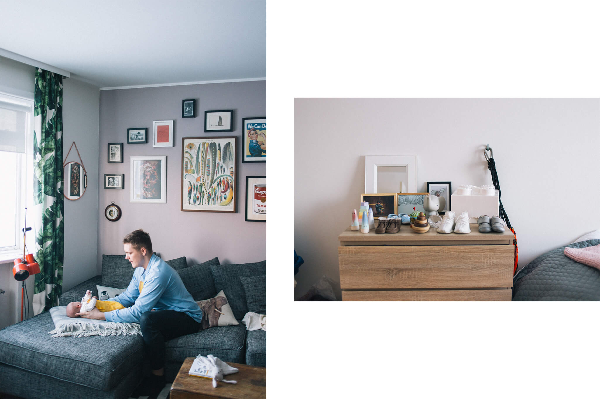
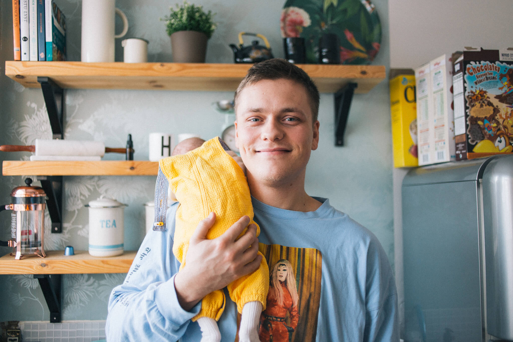
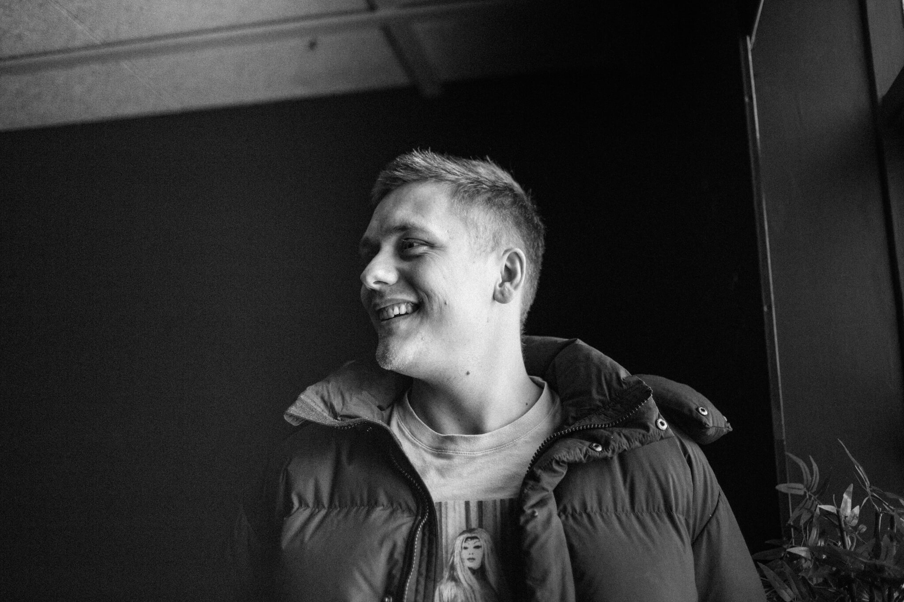

Drama student and new father Aron Már, who is well-known to most Icelanders on social media, has been dealing with anxiety and depression for as long as he can remember. He shares his story of how he let go of the mask after starting drama school and the importance of talking about your feelings with the people around you.
"I'm that traditional anxiety patient, which I think we Icelanders are up to groups. In the summer we have a three-month euphoria and then we fall into a six-month short-day depression. This is the Icelandic routine, I would say."
"My childhood was characterized by constant moving, which made me put on a mask and therefore always play the role of the laughingstock. It was easier to fit in that way. Being open and cheerful goes a long way, but in the long run it does no one any good."
Aron spent a lot of time with his grandfather when he was younger and later he stayed in Sweden after his mother met an American man with whom she lived. Together they had Eva Lynn, his little sister. When Aron was 18, he lost his little sister when she was hit by a car on a family trip. The days after the accident became hazy in my memory. On the way to the hospital, it did not occur to him that his sister was dead.
Aron has previously appeared in an interview where he talks about the loss of his sister and the profound effect it had on him.
"It wasn't until I completely freaked out that the people around me said that I needed to do something about my affairs."
"I have always felt depressed, but after I lost my sister, I sank deep. At first I had no idea what was going on. The body put up one of the hell's defensive walls. I was completely empty and I didn't know how to react to my surroundings. I felt so bad that I started harming myself with drugs, drinking and porn. It wasn't until I completely freaked out that the people around me said I needed to do something about my affairs. I consulted a psychologist who helped me understand what it was I was experiencing. I spent two years with him and still use the tools he taught me today, they help me a lot."

It was at the art college that Aron started to open up. He dropped the mask he had been holding tightly to him.
"The acting forced me to open up. You need to be true to yourself if you are going to participate in this program. There needs to be 100% trust between individuals in the class. At that time I wasn't ready for it, which caused me to fail for a year. I found that I really needed to change something. I completely turned the page and stopped drinking, smoking weed and watching porn, which had all become problematic at this point."
"Today, my anxiety is characterized by this thought that I am not good enough. That I'm not doing enough to be successful in life."
Aron moved to Flúðir and worked there at a party for a boy with a neurological and degenerative disease.
"It changed me a lot to think about someone other than myself. I had to take my ego away which was incredibly humbling. After that, I went on a six-month trip to South America with an open heart and mind. I came back a new man."
"Today, my anxiety is characterized by this thought that I am not good enough. That I am not doing enough to be successful in life. I create a lot of projects and am very busy. As soon as I'm not busy working, I go into a slump. I think, “Wow, I'm not doing anything with my life.” I always think I should be doing something. When I'm under a lot of pressure, I'm not nervous at all, but when nobody expects anything from me, I feel this anxiety. It's incredibly weird. I've been practicing staying at home and relaxing, which is very difficult for me."

Aron says that exercise and psychotherapy have helped him feel better. He also says that he is lucky with his fiancee, Hildi, who has stood by him like a rock through thick and thin. Recently, Aron and his friends have started talking about their feelings, and he says it's very important.
"We all have some form of anxiety and let each other know when we're not feeling well. It is very good because then someone who is not anxious at that moment can calm the other down. It's incredibly convenient, instead of hiding it all inside. You get closer to people by opening up.
"I think it's important to talk to boys about feelings."
I think it's important to talk to guys about feelings. We live in such a good society today that I think the next generations after us will be very different emotionally. I will talk to my son endlessly about feelings. If he's feeling bad, I'll try to work through it instead of doing nothing about it and telling him to just work hard."
Two years ago, Aron founded the organization Allir gräta, whose goal is to open the discussion about anxiety and depression among children and teenagers.

"At first, the organization was mainly aimed at boys, but now we aim at all teenagers, it doesn't matter what gender; girl, boy, hen. I decided to use my following on social media to promote this cause. I gave lectures in schools and shared the importance of being true to yourself. When I was younger, I didn't know which foot to step on and I didn't care about feelings."
“I have to remind myself that this is a long marathon, even a triathlon, not a sprint. I am in a good place now and after the baby arrived I feel much better, I have a new role and responsibility. New feelings are springing up in me, it's like my heart is opening more. It's incredibly beautiful to have a child."
"It sounds like a cliché, but it's true: if you feel bad, get help." As soon as you talk out loud to someone you trust, you will immediately feel a lot better. Whether it's with a psychologist, a good friend or a relative. That's the basis of it all, to talk more about feelings. Icelanders are often stubborn about how they feel and try to show everyone how incredibly good they are, even when they feel bad inside. We need to open up more as a nation."
The interviewees appeared in the interviews on their own terms. The interview is based on their experiences. It is worth mentioning that experiences are personal and not everyone experiences the same symptoms.
Hugrún would also like to point out the resources that are available to those who feel they are experiencing symptoms of depression or anxiety here and here .